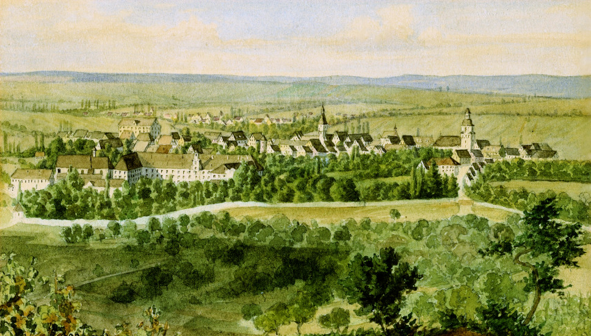
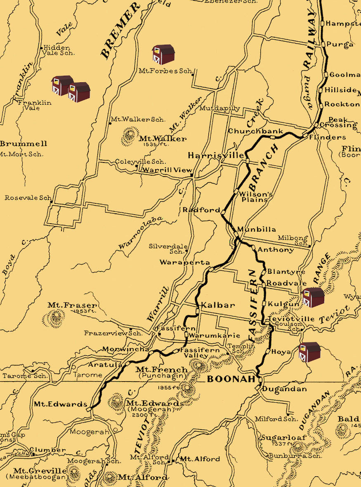
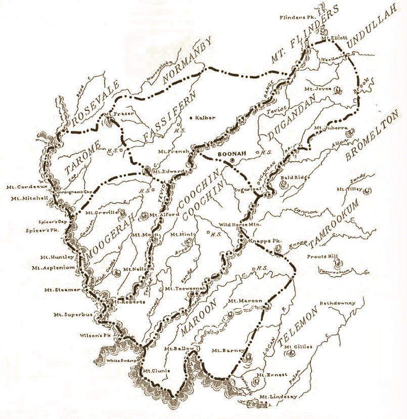

-

The Schneiders
From Whence They Came
Although the first of our Schneiders who migrated to Australia were Johann Heinrich and his wife Rosina, along with their baby daughter Christina, they were soon to be followed by Johann's parents, and his siblings, Gottfried, Friederike, Sophie, Johann and Christina. So the father, Johann Georg Schneider, at the age of 55 was actually the eldest of the family members to have migrated.
The majority of the traceable ancestors of Johann Georg Schneider and his wife Heinricke Margaretha (Lauer), hailed from the far north of the Kingdom of Württemberg, in an area mostly to the east and north of the capital, Stuttgart. The region of interest stretches from Hochdorf, Kirchheim (20km southeast of Stuttgart) up to Hertmannsweiler, Winnenden (25km north of Hochdorf) and then to Weinsberg, Heilbronn (40km north of Hertmannsweiler). The rest of the places roughly lie within 25 km east of those already mentioned places.
The later generations gravitated towards the Weinsberg district near Heilbronn, with a distinct concentration formed in and around the town of Ellhofen, first noted down in the year 1037 under the name of Ellenhouven. By the end of the 14th century, Ellhofen consisted of a collection of nine farming settlements ("Höfe"). In 1774, it was a village with 75 houses, 43 barns, 9 stables and 6 wells.
The Ancestors of Johann Georg Schneider (George)
(NOTE: clicking the button to the left will show or hide the ancestral tree)
and Heinricke Margaretha Lauer

The Death of King Wilhelm I (1864)
For The Times They Have A'Changed
In May of 1864, Johann Heinrich Schneider was the first of our ancestors with the name Schneider to have migrated to Australia. He came from a place called Eberstadt, near his birthplace of Ellhofen both of which were in the kingdom of Württemberg.
To understand some more of the lands of our forebears, a little history can be helpful. Since medieval times, Württemberg was an independent self-ruled member state of the Holy Roman Empire.
The empire was finally dissoved in 1806 which made way for Württemberg to be made into a kingdom. In Johann's day, the country of Germany had not yet formed and the kingdom was still under the rule of Wilhelm I, the very last German king.
From a Duke to a King
Wilhelm I descended from a long line of Kings, Princes, Dukes and so forth. For instance, King George II of Great Britain & Ireland was one of his great-great-grandfathers. Another was the Prussian King Friedrich Wilhelm I on both his great-grandmother's and great-grandfather's sides.
Wilhelm's father was the 16th Duke of Württemberg, Friedrich II, commonly known as Fat Freddie (Dicker Friedrich). During his reign, Friedrich also managed to become a Kurfürst, one of seven or more high ranking Dukes within the the Holy Roman Empire who held the collective right to elect a King. That wasn't all, though. He also became the first king of Württemberg as Friedrich I.
This came about because he had struck a deal with Napolean Bonaparte to supply a massive auxillary force to France. In return Württemberg was raised to the status of a kingdom but at a cost. Over 15,000 Württembergers died in the battle against Russia alone. It was no coincidence either that Frederick's daughter, Princess Catharina happened to be married to Jerome Bonaparte, Napolean's youngest brother.
For 48 years, from September 1819, Frederick's son King Wilhelm I ruled over the Kingdom of Württemberg. Upon his death in June 1864, the land was destined for major change. Before he died though he had made a lot of changes of his own. More than a century later, in 1949, the lands which were once Württemberg became part of the Republic of Germany. Since 1952, Württemberg and its bordering neighbour, Baden, have been part of the German modern state of Baden-Württemberg.A Family of Master Stone Masons
The profession of the Stone Mason is one of the oldest occupations in existence, dating back at least 40,000 years. It also has a long history in the Schneider family. Every generation that can be traced to have lived in Germany had the head of the family and at least one son working as stone masons or masons, sometimes as both, and often as masters of their art. The earliest of the stone mason Schneiders were settled in Hertmannsweiler in the district of Winnenden.
Stone masons would likely have been in big demand in and around Hertmannsweiler. The nearby settlement of Winnental held the royal seat, Winnental Castle (Schloss Winnental), belonging to the ruler of the land. Each Duke who took over the title naturally enough had to expand his domain and that involved new designs and new extensions to be built, out of stone.
As well as that, the Duke had a summer residence, Rosenstein Castle (Schloss Rosenstein), also requiring lots of attention to its stonework. There were also churches, government buildings and other edifices to keep both architects and stone masons busy.

Stone masons at work (Pieter Bruegel 1563)
 Guild Coat of Arms of both
Guild Coat of Arms of both
The Stone Mason and The Tailor
(Gildewappen der Steinhauer und der Schneider), 1636The Generations of Masons
 Hertmannsweiler Coat of Arms depicting a leafy wild man holding a black club
Hertmannsweiler Coat of Arms depicting a leafy wild man holding a black club
Johannes Schneider (unknown) Mason, Stone Mason Hertmannsweiler Jakob Friedrich Schneider (1776–1830) Master Stone Mason Hertmannsweiler d. Ellhofen Johann Friedrich Schneider (1802–1863) Master Mason Ellhofen, d. Ellhofen Johann Georg Schneider Sr (1810–1878) Master Mason Eberstadt, d. Queensland Johann Heinrich Schneider (1836–1905) Master Mason, Stone Mason Eberstadt, d. Queensland Johann Georg Schneider Jr (1845–1929) Mason Eberstadt, d. Queensland According to the official reports of the Administrative Offices of Württemberg (1861), all the residents of the districts of Winnenden and Weinsberg, including Ellhofen and Eberstadt, occupied themselves with small scale farming. This was the case even for qualified tradesmen and professionals.
Hertmannsweiler, from the Forestry Stock Book of the Duke of Württemberg's War Councillor and Lieutenant Colonel Andreas Kieser (1618–1688)
Every household supplied enough food for family use and none was sold. This meant that the residents were all maintaining a self-sufficient lifestyle, ensuring they had plenty of food and produce from their own fields including grains, fruits, wine and dairy. So the Schneiders, having come from there, would have had plenty of experience and confidence to take up farming upon arrival in Australia, which of course they all did.
As was done at the time for occupations with a guild, the generations of our Schneiders formed a family of trained and qualified specialists. Masons and stone masons worked side by side, brother with brother, father with son, passing on both experience and responsibility.Winnenden
How to get to Australia from Germany
1860 saw the creation of the new Colony of Queensland, separating itself from the already existing New South Wales. Around the end of that year, a group of 206 German migrants living in Drayton and Toowoomba petitioned the newly formed Government to encourage more German migration to Queensland. In response to this Johann Christian Heussler was appointed to go to Germany to act as immigration agent for the Queensland Government.
He spent about two years there and eventually two ships, the "Grasbrook" carrying 123 new German settlers and the "Caesar Godeffroy" with 295 more new colonists were sent out. They both arrived in the new land on the same day, November 27, 1861. A few years later, Heussler became a member of the Queensland Legislative Council and his home 'Fernberg' eventually became and still is the residence of the Govenor of Queensland.
Johann Christian Heussler
Back in 1848 though, a German from Frankfurt by the name of Wilhelm Kirchner had already paved the way by writing a book in the German language encouraging his kinsfolk to migrate to the colony of New South Wales. Kirchner had migrated himself in 1839 and returned to Germany in 1848 to espouse the wonders of his newly adopted land. He was so successful with his campaign that the Prussian Government appointed him Consul for the Colony.
The New South Wales Government, also being thrilled by his exploits, enabled him to offer cheap tickets for prospective migrants. One of his big selling points was that the first Governor of New South Wales, Arthur Phillip, was the son of a German who had migrated from Frankfurt to England. That was accompanied by glowing accounts of more food than there were people to eat it, more jobs than there were workers to fill them, a wonderful climate and land just waiting to be owned.
Karl Ludwig Wilhelm Kirchner
The Schneiders Go to Australia
Whatever the real reason the Schneiders had for migrating to Australia, there had been quite a few tragedies preceeding it. In 1859, Johann Georg's second eldest son, Friedrich Karl died from an 'unlucky work accident' at only 21. By then three of his daughters had also died. Johann Georg's eldest brother, Georg Karl, had been lost to Tuberculosis when only 19. Another brother, Johann Friedrich who not only lost two wives and most of his infant children, also died in 1863. For a family business which relied so much on fathers, sons and brothers working together as highly trained and qualified specialists, as well as being close family, to lose so many members must have been shattering to say the least.
So, Johann Heinrich, later known as Henry, along with his young family were the first of our Schneiders to migrate to Australia. They arrived in Moreton Bay on board the 'La Rochelle' in September 1864. Earlier that year, in January, the Lobegeier family migrated on board the 'Susanne Godeffroy'. The mother of that family, Wilhelmina, would later become Henry's second wife. In 1865 Henry's parents Johann Georg and Heinricke Margarethe with the rest of their children also migrated to Australia.
1864 May 28, Departure from Hamburg on the 'La Rochelle'
 Heinrich Schneider, Eberstadt, age 28
Heinrich Schneider, Eberstadt, age 28
Rosine Schneider, age 28
Friederike Schneider, age 6 months1863 September 21, Departure from Hamburg of the 'Susanne Godeffroy'
showing Wilhelmine with her first husband Gottlieb and their four children, all from Stegelitz, Preussen Gottlieb Lobegeyer, age 37
Gottlieb Lobegeyer, age 37
Wilhelmine (born Topp), age 35
Emilie, age 13
Wilhelmine, age 8
Auguste, age 4
Marie, 9 months1865 April 23, Departure from Hamburg of the 'Sophie' with Johann Georg's family.

Schneider, Georg 55 Mason Eberstadt Württemberg Henricke 56 Gottfried 24 Wheelwright Friederike 23 Sophie 22 Johann 20 Mason Christine 15
The Fassifern and Boonah district, highlighting some of the Schneider farms
What the Schneiders Did Next
Upon landing in the new colony on September 5th 1864, Henry and Rosine applied for their own land. Five months after they had first set foot on Australian soil on the 18th February 1865, their application for Land Order 488 in both their names was accepted. That was rather timely because six months later Johann's father, mother, two brothers and three sisters all arrived on August 17th of that year.
The four Schneider men, Johann Georg and his three sons, Johann Heinrich, Gottfried Friedrich and Johann Georg jun., went to Toowoomba where they prepared stone for the Victoria Tunnel at Grandchester on the new railway line being built between Ipswich and Toowoomba. That was followed by a contract to cut billets to fuel the railway engines already running to Grandchester. They also contributed to the masonry work on Parliament House being built in Brisbane.
The Victoria Tunnel

By 1869 Johann Heinrich and Johann Georg had taken up adjoining land at Franklyn Vale with each having about 122 acres. By 1871 they were both listed, along with Fred, as having homesteads at Mt. Walker and Franklyn Vale, more recently known as Rosevale.
Johann Heinrich's father George had his selection of 40 acres of agricultural land and 80 acres of first class pastoral land in the Parish of Franklin accepted in 1873. At the same time Fred went for 40 acres nearby at Forbes. In 1877 Johann Heinrich took on another 200 acres in the Fassifern district at Kulgun. These are only a few examples of the land purchases but enough to show that the Schneiders were settling in to a place already notorious for its brigalow scrub.
Brigalow is a tenacious plant which spreads rapidly viaunderground suckers when the bushy outcrops are cut off. Clearing the land of it and establishing farms was intensely back breaking arduous work. The land they worked was nothing short of a wilderness, but as Fred said later in a news article about his life, 'they slaved and saved'. The womenfolk did too. While the men were off earning their living with railway construction, George's wife and daughters went out picking cotton at Booval near Ipswich.
Henry's application to select land of 121 acres and 1 rood at Franklyn Vale
Mrs Enid Bell wrote of her 1875 journey into the Fassifern:The train in those days only went as far as Peak Crossing. From there was a 32 mile drive by four in hand to Coochin with a change at Milbong. There was no township at Boonah then. Thick tropical scrub green for miles between Harrisville and Boonah where the train now runs. - Enid Bell manuscript 1904, John Oxley Library, OM80-50and T. R. Paton in his Soils Survey described the historical development of land use in the scrub country:The growing demand by the increasing population for locally produced food crops, together with the 1868 Conditional Purchase Act, led to farming settlement of parts of the area. Since pastoral interests held the more desirable land, the only areas available to the immigrant farmers, mainly German, were the softwood and brigalow scrubs. Thus, between 1870 and 1890 the whole of the Fassifern scrub around Boonah was cleared and occupied. The first crops after clearing were maize and lucerne. By 1900 most of the scrub farms had turned to dairying as the main source of income. This change was hastened by the opening of the railways (Harrisville 1882, Boonah 1887, and Beaudesert 1888).
The Fassifern's Early Days
The earliest Europeans to explore the region later known as the Fassifern were Scots. The first attempt was made in 1827 by the notoriously detested Commandant of the Moreton Bay Penal Settlement, Captain Patrick Logan who hailed from Berwickshire in Scotland. At the very same time, Allan Cunningham, a Scot from Renfrewshire made his way up from the Upper Hunter Valley guided by the Perthshire Scot Peter McIntyre but the party was eventually forced back by the terrain. In 1828 Cunningham made another attempt, this time setting out from Moreton Bay, accompanied by Logan and yet another Scot, the Colonial Botanist Charles Fraser from Blair Atholl in Perthshire. Of course, Cunningham's main interest was his obsession over finding a gap in the Great Dividing Range that would allow the Darling Downs to be connected to Brisbane, for which he was successful on July 24.The Runs
The first settlers of the Fassifern Valley were John Cameron from Stirling in Scotland and Robert Coulson who had married Cameron's sister. Cameron's father was a soldier and an early settler of the Upper Hunter Valley having been granted 1280 acres of land near Scone and Peter McIntyre's property. Cameron, not wanting to be a soldier like his father turned his hand to sheep grazing. After first moving to New England and then to the Darling Downs, he finally took out the first lease on the 'Fassifern Run'. Coulson soon followed suit with the neighbouring 'Mooggerah Run'. Altogether the husbands of four of Cameron's sisters took up large runs in the Fassifern: Robert Coulson, Moogerah, William Turner, Tarome, Macquarie McDonald, Dugandan and John Rankin, Maroon.
The name Fassifern is taken to be derived from the Scottish highland hamlet of Fassiefern on the north shore of Loch Eil and about six miles west of Fort William. The area eventually came under the authority of Clan Cameron. There are many other place names in the Fassifern Valley of Scottish origin but eventually the German influence made itself known.
Place Name Changes in the Scrub Country
The changes that occurred to place names give an indication that the scrub country was being transformed into settlements and towns:Fassifern Scrub -> Engelsburg -> Kalbar
The Scrub -> Cornhill -> Lowood
First Plain -> Sally Owens' Plains -> Rosewood Scrub -> Frederick -> Marburg -> Townshend -> Marburg
One Eye Waterhole -> Blantyre -> Milbong
Teviotville -> Coulson
Dugandan Scrub -> Blumbergville -> Boonah
Walloon Scrub -> Kirchheim -> Haigslea
Jakob (Johann Friedrich) Schneider
and Rosina Heinrica Lauer
» Jakob (Johann) Friedrich Schneider (1776–1830) (Master Stone Mason / Steinhauermeister, son of Johannes)
and Rosina Heinrica Lauer (1772–1846) had the following children:
Georg Karl 21.05.1796 – 04.09.1815
†Ellhofen(19 yrs old)
died unmarried from TuberculosisJacob Friedrich 21.07.1799 – 25.03.1800
†Ellhofen(8 months old) Johann Friedrich 09.06.1802 – 17.08.1863
†Weinsbergm. Rosina Magdalena Riedle 20.07.1825
m. Johanne Christiane Lauer 10.05.1836
m. Rosina Margaretha Lauer 11.05.1856Unnamed daughter 15.02.1809 – 15.02.1809
†Weinsberg(less than 1 day old) Johann Georg 28.10.1810 – 04.04.1878
†Franklyn Valem. Heinricke Margarethe Lauer 10.05.1836
migrated to Queensland 1865Justina Barbara 20.04.1816 – unknown
†unknownChristina ??.??.18?? – 31.08.1861
†unknown
Jakob (the father) had a sister, Philippina Carolina born 6 May, 1788
and a brother Johann Georg born 10 June 1789
and another brother, Johannes, born 28 Dec 1793
Interestingly, Jakob's brother, Johann Georg, lived up to the name of Schneider by becoming a Master Tailor (Schneider Meister).
 Baptism 1772, 14 August, of Rosina Heinrica Lauer, daughter of Georg David Lauer, Winegrower, and his wife: Maria Barbara, born Breuninger
Baptism 1772, 14 August, of Rosina Heinrica Lauer, daughter of Georg David Lauer, Winegrower, and his wife: Maria Barbara, born Breuninger
 Baptism 1776, 15 April, in Hertmannsweiler, of Jacob Schneider, son of Johannes Schneider and his wife: Margaretha, born Rinckert
Baptism 1776, 15 April, in Hertmannsweiler, of Jacob Schneider, son of Johannes Schneider and his wife: Margaretha, born Rinckert
 Marriage 1798, 6 November, in Ellhofen, of Johann Friderich Schneider, lawful unmarried son of Johannes Schneider, Resident, Mason and Master Stone Mason of Herdmannsweiler, Winnenden, with Rosina Heinrika Lauer, daughter of Georg David Lauer, Resident and Baker
Marriage 1798, 6 November, in Ellhofen, of Johann Friderich Schneider, lawful unmarried son of Johannes Schneider, Resident, Mason and Master Stone Mason of Herdmannsweiler, Winnenden, with Rosina Heinrika Lauer, daughter of Georg David Lauer, Resident and Baker
 Death 1830, 7 January, in Ellhofen, of Jakob Friedrich Schneider, Resident and Mason, born in Herdmannsweiler, Winnenden, son of Johannes Schneider, Resident and Maurermeister in Winnenden and his wife Margaretha born Rinckerin. Wife Heinrike born Lauer
Death 1830, 7 January, in Ellhofen, of Jakob Friedrich Schneider, Resident and Mason, born in Herdmannsweiler, Winnenden, son of Johannes Schneider, Resident and Maurermeister in Winnenden and his wife Margaretha born Rinckerin. Wife Heinrike born Lauer
 Death 1815 Jakob's son Georg Karl, aged 19
Death 1815 Jakob's son Georg Karl, aged 19
Single, 19y 6m 11d, Tuberculosis, Ellhofen, Sept 2, Morning 7 o'clock Double Wedding 10 May 1836
Double Wedding 10 May 1836
The Schneider brothers Johann Friedrich and Johann Georg married the Lauer sisters Johanne Christiane and Heinricke Margarethe on the same day.

Rosensteinhaus
Johann Georg Schneider (George)
and Heinricke Margarethe Lauer
» Johann Georg Schneider (1810–1878) (son of Jakob Schneider, Master Mason / Maurermeister)
married Heinricke Margarethe Lauer (1809–1882) in Ellhofen, 10.05.1836and they had the following children:
Johann Heinrich (Henry) 20.09.1836 –
*Eberstadt10.06.1905
†Teviotvillem. Rosine Friederika Eckert in Eberstadt, 24.08.1862
m. Wilhelmina Fredericka Topp in Ipswich, 21.08.1869Friedrich Karl 12.05.1838 –
*Ellhofen14.11.1859
†Eberstadt(21 years old) fell from scaffolding in Hölzern (1km east of Eberstadt) and died from a broken neck Friederike Heinricke 19.02.1840 –
*Ellhofen29.02.1840
†Eberstadt(10 days old) Gottfried Friedrich (Fred) 26.01.1841 –
*Eberstadt03.07.1934
†Boonahm. Johanna "Caroline" Wilhelmine Dickfos in Ipswich, 08.07.1871 Friederike Sophie (Heinricke) 14.10.1842 –
*Eberstadt16.03.1875
†Mutdapillym. Johann Joachim Friedrich Hinrichsen in Ipswich, 20.08.1866 Heinrike Sophie (Sophia) 28.11.1843 –
*Eberstadt26.01.1917
†Coleyvillem. Johann Friedrich "August" Dickfos in Qld, 11.12.1869 Johann Georg Jr (John) 23.10.1845 –
*Eberstadt24.04.1929
†Boonahm. Auguste Wilhelmine Marie Ernestine "Friederike" Henselin in Ipswich, 16.11.1872 Christine 25.11.1848 –
*Eberstadt19.06.1850
†Eberstadt(18 months old) Christine Elisabeth 17.09.1850 –
*Eberstadt12.01.1942
†Kalbarm. Johann "Carl" Dickfos in Ipswich, 01.07.1871 Marie Elisabethe 25.09.1852 –
*Eberstadt25.11.1852
†Eberstadt(2 months old)
 1810 birth 25 Oct, baptism 28 Oct, in Ellhofen, of Johann Georg Schneider, son of Jakob Schneider, Resident and Mason and his wife Rosina Heinrike born Lauer
1810 birth 25 Oct, baptism 28 Oct, in Ellhofen, of Johann Georg Schneider, son of Jakob Schneider, Resident and Mason and his wife Rosina Heinrike born Lauer
 Eberstadt Family Book of Johann Georg Schneider
Eberstadt Family Book of Johann Georg Schneider
Housefather: Schneider, Joh. Georg, Maurermeister,
born 1810 25 Oct
father Jakob Friedr. Schneider Ellhofen
mother Rosine Heinricka born Lauer
Baptist with family
This family migrated in April 1865 to Australia.
Married 1836 10 Mar
Housemother: Heinricke Margaretha
born 1809 31 Dec
father Joh. Martin Lauer
mother Sophie Barb. born Mang
 1836 Marriage of Johann Georg Schneider and Heinricke Margaretha Lauer
1836 Marriage of Johann Georg Schneider and Heinricke Margaretha Lauer
(extract from 1865)
Kingdom of Württemberg
Administrative Office of Weinsberg
District of Eberstadt
According to this Family Register
on the 10th of May 1836 was married
Johann Georg Schneider
at the time a Master Mason in this place
to Heinricke Margaretha born Lauer in
Ellhofen
The authenticity of this extract is certified
Eberstadt 16 Februar 1865
K. Rectory
Wolff Death 1859 Johann Georg's son Friedrich Karl, aged 21
Death 1859 Johann Georg's son Friedrich Karl, aged 21
single, Baptist, 21yrs 6mths, broke neck by unlucky fall from scaffold in Hölzern 12 Nov. 7:00
(Hölzern is 1km east of Eberstadt)

Johann Heinrich Schneider (Henry)
and his 1st wife Rosina Friederike Eckert
and his 2nd wife Wilhelmine Friederike (Topp) Lobegeiger

Johann Heinrich Schneider

1862 1st Marriage to Rosina Friederike Eckert

1869 2nd Marriage to Wilhelmine Friederike (Topp) Lobegeiger

c1889 Family of Johann Heinrich with Wilhelmine seated by his side

1882 Double wedding for sisters Friederike and Rosina
Friederike married August Lobegeier and Rosina married Wilhelm Rieck

1915 Death Certificate of Wilhelmina in Gayndah
Johann Heinrich (Henry) Schneider (1836–1905)
and his 1st wife Rosina Friederike Eckert (1836–1869)
were married in Eberstadt on 24.08.1862 and they had the following children:
Friederike Sophie 24.02.1862 –
*Eberstadt17.12.1863
†Eberstadt(22 months old) Friederike Christina 05.06.1863 –
*Eberstadt31.03.1938
†Murgonm. August Carl Hermann Lobegeier
in Harrisville, 23.02.1882Christine Sophie 15.04.1865 –
*Qldunknown
†unknownmarriage status unknown Rosine Sophie 06.01.1866 –
*Qld04.09.1936
†Boonahm. Wilhelm Christian Friedrich Rieck
in Qld, 23.02.1882Louise Friederike 29.11.1867 –
*Qld07.01.1944
†Qldm. Edward Appleby in Qld, 30.06.1887 Wilhelmina (Minnie) 23.12.1868 –
*Qld02.04.1946
†Coalfallsm. Joseph (Job) Harding in Qld, 25.03.1891
Johann Heinrich (Henry) Schneider (1836–1905)
and his 2nd wife Wilhelmine Friederike (Minnie) Topp (1829–1915)
were married in Ipswich on 21.08.1869 and they had the following children:
Johann Heinrich (Henry) 14.07.1870 –
*Rosewood14.04.1946
†Kalbarm. Annie Lobegeiger 09.02.1898
Martha 05.01.1873 –
*Calvert05.11.1941
†Marburgm. Albert John Kuss 30.04.1896 All in the family
Johann Heinrich (the younger) married Annie,
the daughter of his mother's first husband's brother:
Annie's father was Friedrich Wilhelm August Lobegeiger
whose father, also named Friedrich Wilhelm August Lobegeiger
was the brother of Friedrich Gottlieb Ferdinand Lobegeiger
who was the first husband of Wilhelmine Friederike Topp.
Johann Heinrich's half sister Friederike Christine married Annie's uncle:
Annie's father was Friedrich Wilhelm August Lobegeiger
who was the brother of August Carl Hermann Lobegeier
who married Friederike Christine
Below: The Family Chronicle (Familien Chronik) of Johann Heinrich Schneider 
Family-Chronicle
Johann Heinrich Schneider
born on the 23rd of September
1836 in the district of
Weinsberg, Kingdom of
Württemberg, Germany
who came into this land on
8th September 1864,
found peace in Jesus
blood and was baptised
by B. Eggler on 24th March
1859 in Heilbronn on the Neckar
married in the year
1862 on 18th August
Rosine Friederikenee Eckert and from this
marriage was born
on 4th June 1864 a
daughter with the name
Christina Friederike,
on 6th January 1866 was born
a daughter with the name
Rosina Sophie, on 29th Nov
1867 was born a
daughter with the name Louise
Friederike, on 25th December
1868 was born Minna
with that name. On 6th January
1869 my beloved wife died of blood
poisoning in the blessed
peace of the Lord RedeeemerI was married to a
second wife on 17th August
1869, Wilhelmina Friederika
nee Topp of the Kingdom
of Prussia, Province Branden-
burg, who was born
on 26th December 1829.
From this second marriage was
born on 14th July
1870, a son by the name of
Heinrich. On 5th January
1873 was a
daughter born with the name
Martha.On the 4th of September 1865,
came my dear
parents and siblings to this
land. My dear father
was born the 21st October
1810 in the district Weins-
berg in the Kingdom of Württem-
berg and my precious
mother was born on
the 29th December 1810
in the same place. My father
died in the peace of his
Saviour on 6th April
1877 of a chill.
My mother died on
24th July 1882. Her death
was a gentle falling to sleep
in the Lord.
Johann Heinrich Schneider (Henry)
and Annie Lobegeiger
Henry and Annie with their eight children, from left: Norman, Ben, Ambrose, Arthur, Lily, Edward, Harry, Fred
» Johann Heinrich (John Henry) Schneider (1870–1946)
married Anna (Annie) Lobegeiger (1871–1919) in Coleyville, 09.02.1898and they had the following children:
Arthur Henry Schneider 27.06.1899 –
*Kalbar23.06.1949
†Kalbarm. Adelaide Krueger in Qld, 24.07.1919 Harry Joseph Schneider 13.02.1901 –
*Roadvale26.11.1967
†Kalbarm. Lilly Schossow in Qld, 22.08.1923 Benjamin Walter Schneider 31.12.1903 –
*Kulgun29.05.1950
†Wondaim. Alma Dorothy Pieper in Ipswich, 01.09.1924 Lilly Annie Schneider 15.11.1905 –
*Roadvale16.08.1949
†Boonahm. Harold James Zimmerman in Qld, 29.04.1924 Edward John Schneider 28.07.1907 –
*Harrisville03.12.1951
†Harrisvillem. Esther Karen Muller in Qld, 03.07.1929 Ambrose Harold Schneider 19.06.1909 –
*Boonah30.03.1950
†Kalbarm. Vina Isabel Niebling in Qld, 29.03.1933 Norman Andrew Schneider 20.04.1912 –
*Boonah26.11.1953
†Clevelandm. Ruth Amelia Pfeffer in Qld, 20.02.1935 Frederick Allen Schneider 12.08.1913 –
*Hoya02.03.1977
†Kalbarm. Bertha May Prenzler in Kalbar, 28.06.1941
Themes
It's not too much of a coincidence that the Schneiders in Germany had a thing about building walls. In the old days, walls were a necessary part of defence for city, town, castle and house. In Australia, those defences were down. It was nigh on impossible to protect property and farms from marauders. And that's exactly where Henry (Johann Heinrich) senior got himself into trouble. Big trouble. Around two o'clock in the morning of January 24, 1875, one Michael Portley with accomplices attempted to steal Henry's watermelons. Henry saw this as the last straw, having been under attack many times before. He gave warning he would shoot and upon no response, fired what he thought was a warning shot from across the field, in the dead of the night. Unfortunately, he hit the miscreant. Also unfortunately, he was found guilty in August the same year of unlawfully injuring and sentenced to one month hard labour at the Brisbane prison.
Of course in America at the same time watermelon theft was regarded as a crime against the national order and was heavily sentenced. In fact it was such a problem is was number one on the most frequently occurring crimes. And the state did something about it to protect both the farmers and their produce.
 The Circle of Summertime
The Circle of Summertime
The Fassifern way of life and living can be nicely summarised
by the text to 'Vivaldi's Song' by Michael Franks:
We weather the wind and rain
We grow the farm
We're safe from harm
Inside this circle of summertime
{kind=link}
{kind=link}
{kind=link}
{kind=link}
{kind=link}
About Us
We are the descendants of Anglo-Scottish-Prusso-Germanic Australian migrants who settled in the newly formed colonies of New South Wales and Queensland in the nineteenth century. The idea behind these pages is to present the stories and characters of those early settlers along with information about their origins, descendants, families, whereabouts and activities.There are often themes running through their struggles and achievements telling a tale of resourcefulness and hardships in an alien world. The paradox of Australia as an ancient and raw continent and as a 'New World' portrays a collision of ideals and realities yet still shows a continuity in how those people dealt with everyday life.